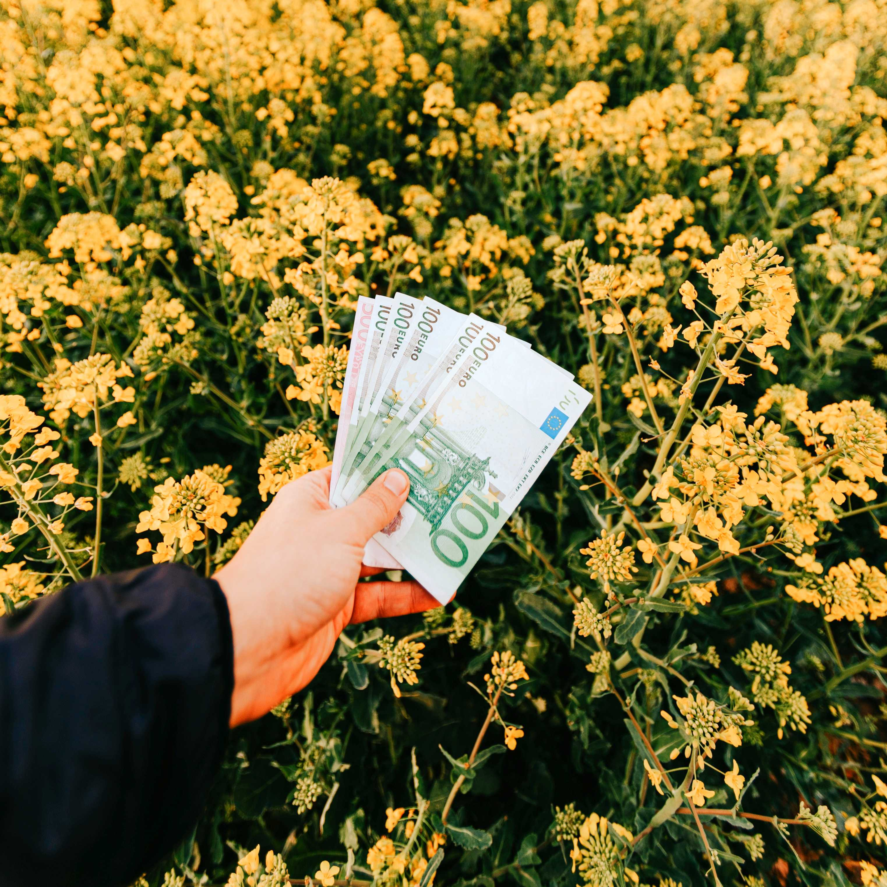

Redução de Custos
Reduza seus custos operacionais com nossa solução de agricultura, automatizando processos e otimizando recursos para obter eficiência máxima.
A fome mundial segue crescendo, enquanto isso, milhares de litros de água seguem sendo desperdiçados no campo agrícola
É crucial agir agora, assim nosso propósito é combater a fome global e promover o uso responsável dos recursos hídricos na agricultura
A partir disso, desenvolvemos um sistema de irrigação inteligente, baseado em sensores e inteligência artificial, que promove o uso eficiente d'água na irrigação.
Assista ao vídeo e descubra como estamos transformando a maneira como cultivamos alimentos!
Para garantir a máxima eficiência em nossos processos, utilizamos tecnologias de ponta, incluindo:
Descubra os principais benefícios de utilizar nossos serviços em expertise agrícola, nossa solução revoluciona a forma como os agricultores cultivam, garantindo colheitas eficientes e saudáveis.
Junte-se a nós e desfrute dos benefícios de uma agricultura moderna e sustentável!
Reduza seus custos operacionais com nossa solução de agricultura, automatizando processos e otimizando recursos para obter eficiência máxima.
Promova a preservação ambiental com nossa solução sustentável, que permite o uso racional de recursos como água e fertilizantes, reduzindo o impacto negativo no ecossistema.
Alcance uma maior produtividade em suas colheitas, graças ao monitoramento em tempo real e à tomada de decisões informadas, garantindo cultivos saudáveis e de alta qualidade.